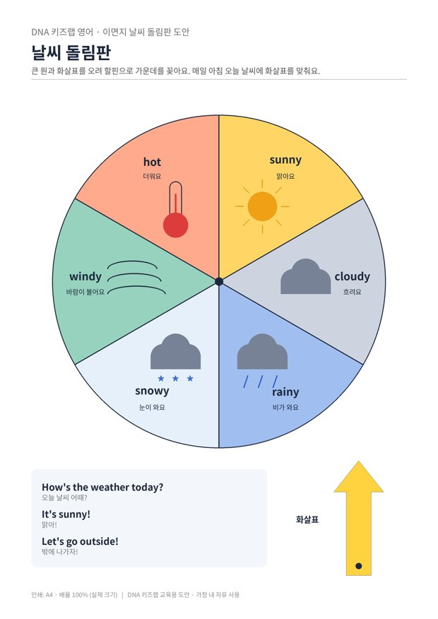

전체 단원 › 실험·활동 › 3학년 2학기 영어
이면지 날씨 돌림판

현관에 날씨 돌림판을 걸고, 매일 아침 창밖을 보며 오늘 날씨를 영어로 말해요.
만들기 30분 · 매일 1분 · 난이도 ★☆☆ 쉬움
준비물
- 날씨 돌림판 도안 — 이면지에 인쇄해도 돼요 (A4 1장)
- 두꺼운 종이 — 과자 상자나 택배 상자를 펼쳐서
- 할핀 1개 — 화살표를 돌릴 수 있게 고정해요 (없으면 압정과 지우개)
- 풀, 가위, 끈 — 벽이나 현관문에 걸 때 써요
하는 방법
- 판 만들기
도안을 두꺼운 종이에 붙이고 큰 원과 화살표를 오려요. - 화살표 달기
원 가운데 점과 화살표 아래쪽 점을 맞추고 할핀으로 꽂아요. 화살표가 빙글빙글 도는지 확인해요. - 현관에 걸기
아이 눈높이에 맞춰 현관문이나 창문 옆에 걸어요. - 매일 아침 1분
학교 가기 전에 부모님이 "How's the weather today?" 하고 물으면, 아이가 창밖을 보고 화살표를 돌리며 대답해요.
외국어는 짧게라도 매일 쓰는 것이 가장 효과적입니다. 하루 1분 날씨 대화를 아침 습관으로 만들어 보세요. 한 달이면 날씨 낱말 6개와 질문·대답 표현이 자연스럽게 입에 붙어요.
학교 교육과정 연결
- [4영02-08] 자기 주변 주제에 관한 담화의 주요 정보를 묻거나 답한다.
- [4영02-04] 실물, 그림, 동작 등을 보고 쉽고 간단한 문장으로 말하거나 단어나 어구를 쓴다.